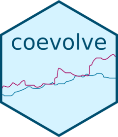

Package index
-
coev_fit() - Fit Bayesian dynamic coevolutionary model in Stan
-
coev_make_stancode() - Make Stan code for dynamic coevolutionary model
-
coev_make_standata() - Make Stan data for dynamic coevolutionary model
-
print(<coevfit>) - Print a summary of a fitted model represented by a
coevfitobject -
summary(<coevfit>) - Create a summary of a fitted model represented by a
coevfitobject
-
plot(<coevfit>) - Trace and density plots for
coevfitobjects -
pairs(<coevfit>) - Create a matrix of output plots from a
coevfitobject -
coev_plot_delta_theta() - Plot delta theta values from a fitted
coevfitobject -
coev_plot_flowfield() - Plot flowfield of expected evolutionary change from a fitted
coevfitobject -
coev_plot_pred_series() - Plot a predicted coevolutionary time series from a fitted
coevfitobject -
coev_plot_predictive_check() - Plot predictive check from a fitted
coevfitobject -
coev_plot_selection_gradient() - Plot selection gradient heatmap from a fitted
coevfitobject -
coev_plot_trait_values() - Plot estimated trait values from a fitted
coevfitobject
-
extract_samples() - Extract samples (draws) from a fitted
coevfitobject -
coev_ancestral_states() - Extract ancestral state estimates from a fitted coevolutionary model
-
stancode() - Expose the Stan code of a fitted model represented by a
coevfitobject -
standata() - Expose the Stan data list for a fitted model represented by a
coevfitobject
-
coev_calculate_delta_theta() - Calculate delta theta from a fitted
coevfitobject -
coev_calculate_theta() - Calculate equilibrium trait values (theta) for a fitted
coevfitobject -
coev_pred_series() - Predict a co-evolutionary time series from a fitted
coevfitobject
-
save_coevfit() - Save a fitted
coevfitobject to a file
-
coev_simulate_coevolution() - Simulate the coevolution of multiple variables in discrete time steps
-
draws(<jax_fit>) - Extract draws from jax_fit object
-
metadata(<jax_fit>) - Extract metadata from jax_fit object
-
summary(<jax_fit>) - Summary statistics for jax_fit object